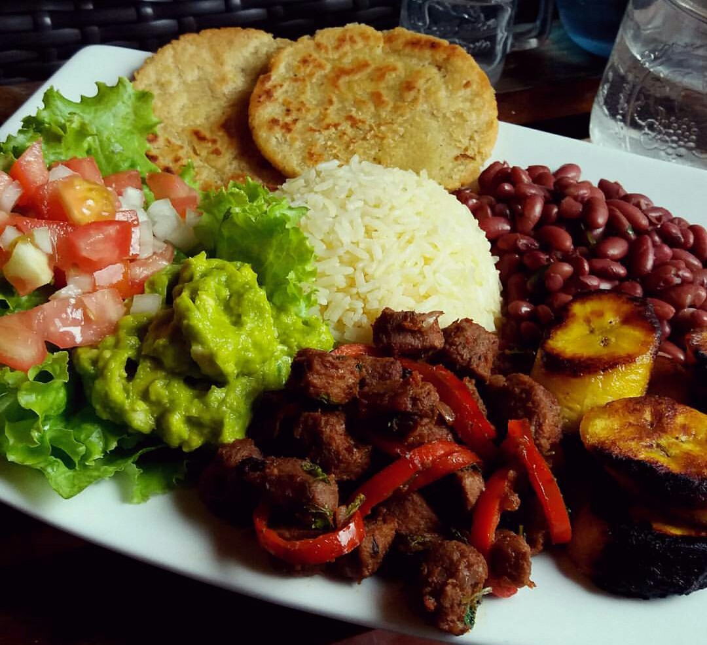

Casado

El casado es un plato tradicional en la cocina costarricense.1 Se trata de una comida muy abundante que consiste en arroz, frijoles y plátano maduro, picadillo, se suele acompañar de carne de vacuno, cerdo, pescado o pollo. A veces se incluye una guarnición de col, ensalada y usualmente se le añade pasta en diversas variantes. Este platillo es considerado un blue-plate special en Costa Rica.
El casado consta de los siguientes ingredientes:
- Arroz
- Frijoles
- Platano maduro
- Ensalada
- Cerdo, pescado o pollo
- Picadillo y verduras
Go back